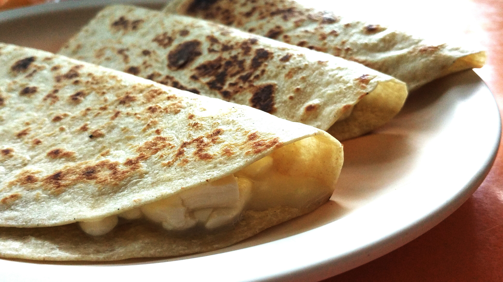

Quesadillas

Quesadillas are a simple dish to create at home with very little Ingredients and knowledge of cooking
Ingredients
- big flour tortillas
- shredded parmesan cheese
Optional Ingredients
- your choice of meat
- your choice of vegetables
Steps to create
- The first step is to cook the flour tortillaon both sides
- Then after both sides of the tortilla is cook you have to add the cheese and let cheese melt for 1 min
- After that you are going to want to fold the tortilla in half and let toast on both sides
- Finally if you have extra Ingredients to add you want to the Quesadilla and add in tthe rest of your Ingredients
Main Page